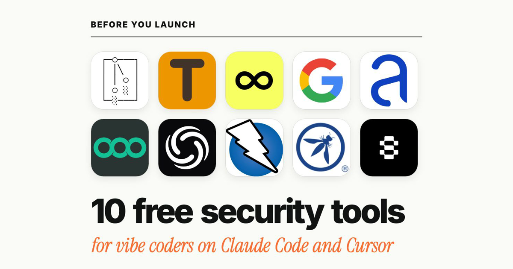
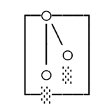

From the reel · Security
10 free tools to check your app before you launch.
Claude Code and Cursor write code fast. They can also leave an API key in a commit or pull in a package with a known bug. These ten open-source tools catch that, and every one of them is free to run.

One rule
before you start.
Only scan code and sites you own, or have written permission to test. The first six tools read your own code on your own machine, so they're safe anywhere. Nuclei, ZAP and Strix send real requests to a running app. Point them at your local or staging copy, not at someone else's site and ideally not at production.
The commands below use Homebrew on macOS and Linux. Each repository lists other ways to install (Docker, Go, binaries, Windows) in its README.
Where to start
Three checks, in this order.
Leaked keys
Gitleaks and TruffleHog. A leaked key is the fastest way to get a surprise bill. If one turns up, rotate it with the provider; deleting the commit isn't enough.
Known bugs
OSV-Scanner or Grype on your lockfiles. Update what they flag, then run your tests.
Unsafe patterns
Semgrep on the code, then Nuclei, ZAP or Strix against your staging site.
The countdown
All ten, with the command to run.

GitleaksChecks your commits for API keys. Scans your Git history and files for passwords, API keys and tokens before they get pushed. github.com/gitleaks/gitleaks ↗
brew install gitleaks
gitleaks git -v
TruffleHog
Tells you if a leaked key still works. Finds secrets and checks each one against its provider, so you know which leaks are still live and need rotating first. github.com/trufflesecurity/trufflehog ↗
brew install trufflehog
trufflehog git file://. --results=verified
Infisical
Keeps your secrets out of your code. An open-source secrets manager. Your app reads keys at runtime instead of from a .env file in the repo. Its CLI can also scan for leaks. github.com/Infisical/infisical ↗
brew install infisical/get-cli/infisical
infisical scan --verbose
OSV-Scanner
From Google: checks packages for known bugs. Reads your lockfiles and matches every dependency against the open OSV vulnerability database. github.com/google/osv-scanner ↗
brew install osv-scanner
osv-scanner scan source -r .
Grype
Scans dependencies and Docker images. Finds known vulnerabilities in a folder or a container image, including OS packages inside the image. github.com/anchore/grype ↗
brew install grype
grype dir:.
Semgrep
Reviews your code for unsafe patterns. Static analysis for 30+ languages. Catches things like SQL built from user input or a missing auth check. github.com/semgrep/semgrep ↗
brew install semgrep
semgrep scan --config auto
Nuclei
Scans your live site for common issues. Runs thousands of community templates against a URL: exposed admin panels, misconfigurations, known CVEs. github.com/projectdiscovery/nuclei ↗
brew install nuclei
nuclei -u https://staging.your-app.com
ZAP
Tests your app the way an attacker would. A web app scanner. The baseline scan crawls your site and reports issues without attacking it. github.com/zaproxy/zaproxy ↗
docker run -t zaproxy/zap-stable zap-baseline.py -t https://staging.your-app.com
OWASP Cheat Sheets
Shows you how to do it right. Short, practical guides on auth, sessions, passwords, file uploads and more. Paste one into Claude and ask it to check your code against it. github.com/OWASP/CheatSheetSeries ↗
Strix
AI agents that test your app and help you fix it. Open-source AI agents that run your app, try real attacks, prove each finding, and suggest fixes. Needs Docker and an API key for the AI model it uses. github.com/usestrix/strix ↗
pipx install strix-agent
strix --target ./app-directory
Using Claude Code or Cursor?
Let the agent fix what they find.
Run a scanner, save its output to a file, then ask your agent: "Read scan.txt. Explain each finding in one line, mark which ones are real, and fix the real ones one at a time. Don't change anything else." Check every fix before you commit it. A scanner can be wrong, and so can the agent.
Good to know: all ten are free to use. Infisical and Semgrep also sell paid cloud plans, and Strix uses an AI model you pay for through your own API key. Licences are listed on each card; check them before you build one into a commercial product.
Came here from the Reel?
Here is your SECURE list.
You commented SECURE for this page. Start with Gitleaks on your current project. It takes about a minute.